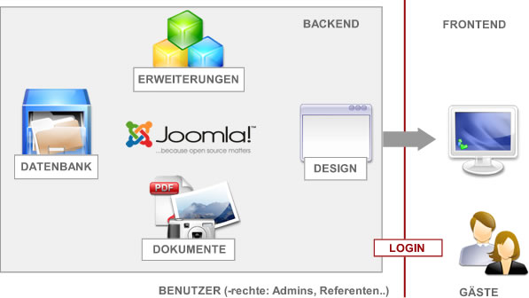

Joomla ist ein beliebtes, vielseitiges und vor allem kostenloses CMS, welches sich hervorragend dazu eignet, in wenigen Klicks eine eigene Homepage zu erstellen und zu verwalten.
CMS bedeutet, dass mehrere Benutzer an der Homepage arbeiten können.
Man braucht keinerlei Grundkenntnisse in Webseitengestaltung, Joomla ist extra dafür konzipiert, dass es nutzerfreundlich und einfach für alle zu bedienen ist.
Joomla verfügt über etliche Erweiterungen (genannt Komponenten, Module, Plugins) wie Foren, Gästebücher, Galerien oder Schach Ligamanager, die sämtliche Wünsche abdecken. Die Erweiterungen werden größtenteils unentgeltlich von Freiwilligen geschrieben und lassen sich wieder deinstallieren.
Der Inhalt ist von allem anderen getrennt und befindet sich mit allgemeinen Einstellungen in einer MySQL-Datenbank. Neben ca. 50 MB Speicherplatz wird diese benötigt, um Joomla zum Laufen zu bringen.
Das Design wird mittels Templates gesteuert, welche wie die Erweiterungen meist kostenlos erhältlich sind. Rechts finden Sie alle interessantes Links zu Joomla! Viel Spaß!
